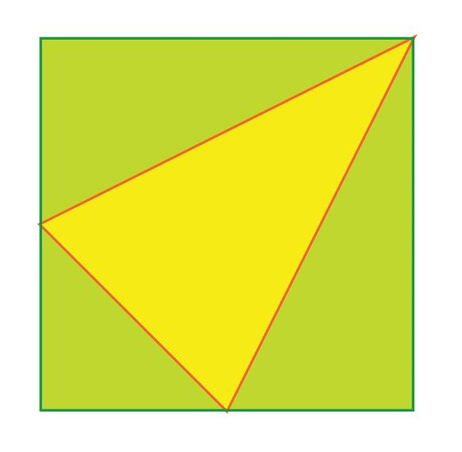
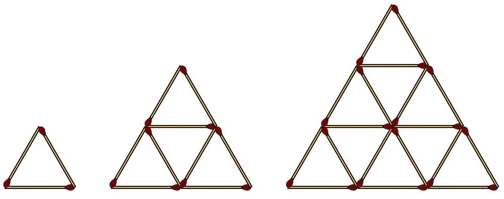
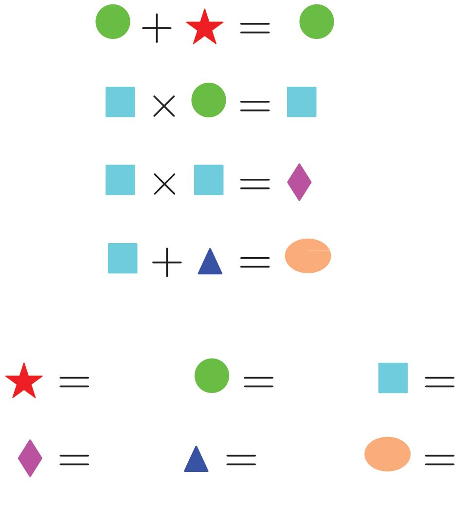

Two rectangular pieces of paper, 6 centimeters long and 4 centimeters
wide, are folded four times, one horizonatally and the other vertically to
make two tubes:
Which of the tubes has more volume? How much more?
Part - 2
172
Page 85
Figure fig_ch07_p085_01 (Page 85)

Figure fig_ch07_p085_02 (Page 85)
Class - 6
2.
In the picture below, the yellow rectangle is drawn joining one vertex of
the green square and the mid-points of its two sides.
What fraction of the area of the square is the area of the triangle?
3.
Look at the pattern below:
1
1
+ =1
2
2
2+2 = 4
1
2
+
=1
3
3
3+
1
3
+ =1
4
4
4+ 3 =
1
4
+ 5 =1
5
5+
2
3
+ 5 =1
5
25
5 5
5 5
+ = 6 = × 3
2 3
2
3
9
=
2
2
4
= 2×2
= 3×
3
2
16
4
= 4× 3
3
5
25
5
=
= 5×
4
4
4
Can you find other pairs of numbers with their sum and product equal?
What is the general method to find such pairs?
173
Page 86
Figure fig_ch07_p086_01 (Page 86)

Figure fig_ch07_p086_02 (Page 86)
Mathematics
4.
The product of the natural numbers from 1 to 10 can be factorized as a
product of primes like this:
1 × 2 × 3 × 4 × 5 × 6 × 7 × 8 × 9 × 10
= (2 × 2 × 2 × 2 × 2 × 2 × 2 × 2) × (3 × 3 × 3 × 3) × (5 × 5) × 7
How many factors does the product have? How many zeros does this
number end with?
If the product of natural numbers from 1 to 20 is factorized as a product of primes like this, which of the primes would be in it? How many of
each?
How many factors would the product have? How many zeros would it
end with.
5.
See these triangles made with matchsticks:
First one triangle, then four triangles in two rows, next nine triangles in
three rows.
How many matchsticks are used to make each?
Lets write as a table:
Part - 2
174
Page 87
Figure fig_ch07_p087_01 (Page 87)

Figure fig_ch07_p087_02 (Page 87)
Class - 6
Rows
Triangles
Matchsticks
1
1
3
2
4
9
3
9
18
4
5
Can you fill up the table? How many triangles would be there if we
make 10 rows like this? How many matchsticks would we need to
make them?
6.
Each shape in the sums and products below stands for one of the numbers 0, 1, 2, 3, 4, 5. Can you find out what number each shape stands
for?